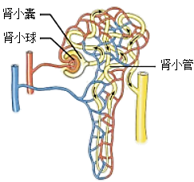
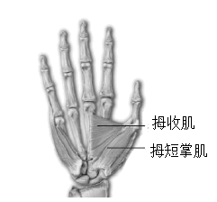

2024年北京市西城区中考生物真题 · 选择题 第11、12、13、14、15题
11. 图是肾单位结构模式图，以下相关叙述错误的是（ ）

A. 肾单位是形成尿液的基本结构
B. 肾小球可滤过血浆中所有物质
C. 肾小囊中的原尿里含有葡萄糖
D. 肾小管长而弯曲有利于重吸收
12. 人体神经调节的基本方式是（ ）
A. 反射B. 运动C. 神经元D. 反射弧
13. 握手是人与人之间表示友好的一种礼仪。握手时，大拇指要向手心运动。如图是人右手掌心面骨骼及部分肌肉示意图，下列相关叙述错误的是

A. 拇短掌肌两端附着在同一块骨上B. 握住手时，拇收肌处于收缩状态
C. 握手时，骨骼肌牵拉骨绕关节运动D. 握手动作在神经系统调节下完成
14. 在听觉形成的过程中，接受刺激产生兴奋的结构位于（ ）
A. 耳廓B. 鼓膜C. 听小骨D. 耳蜗
15. 下列可以促进生殖器官发育，激发并维持第二性征的激素是（）
A. 胰岛素B. 性激素
C. 生长激素D. 甲状腺激素